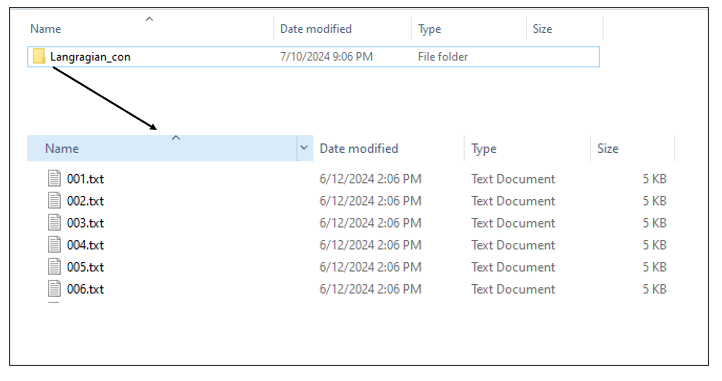
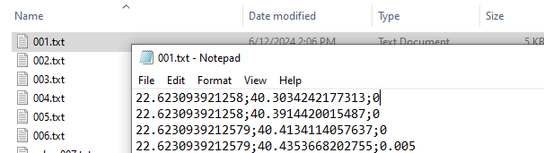

Read connectivity data from multiple sub-folders.
preprocess_graphs.RdRead connectivity data from multiple sub-folders.
Arguments
- path
a path of the folder where sub-folders containing txt or csv files are contained. Each sub-folder has the name of the corresponding connectivity data. In case that a connectivity folder corresponds to a specific biodiversity feature, it should be named as the corresponding feature.
- ...
additional arguments passed to
read.csv.
Details
This is an auxiliary function for creating an edge list data.frame
object from multiple files, like the ones provided from softwares estimating
Lagrangian models.
Function preprocess_graphs takes as input a list of .txt/.csv objects. Each object represents the connections between a node and all the other nodes. For the model to read the data, it is necessary to have all the .txt/.csv objects in one folder. There are two ways to incorporate connectivity data, based on their linkage to features:
Case 1: the connectivity data correspond to specific biodiversity features. If a biodiversity feature has its own connectivity dataset then the file including the edge lists needs to have the same name as the corresponding feature. For example, consider having 5 species (f1, f2, f3, f4, f5) and 5 connectivity datasets. Then the connectivity datasets need to be in separate folders named: f1,f2,f3,f4,f5 and the algorithm will understand that they correspond to the species.
Case 2: the connectivity dataset represents a spatial pattern that is not directly connected with a specific biodiversity feature. Then the connectivity data need to be included in a separate folder named in a different way than the species. For example consider having 5 species (f1,f2,f3,f4,f5) and 1 connectivity dataset. This dataset can be included in a separate folder (e.g. "Langragian_con").

A typical Lagrangian output is a set of files representing the likelihood of a point moving from an origin (source) to a destination (target). This can be represented using a list of .txt/.csv files (as many as the origin points) including information for the destination probability. The .txt/.csv files need to be named in an increasing order. The name of the files need to correspond to the numbering of the points, in order for the algorithm to match the coordinates with the points.

Value
an edge list data.frame object, with the following columns:
feature: feature name.from.X: longitude of the origin (source).from.Y: latitude of the origin (source).to.X: longitude of the destination (target).to.Y: latitude of the destination (target).weight: connection weight.
See also
preprocess_graphs,
get_metrics
Examples
# Read connectivity files from folder and combine them
combined_edge_list <- preprocess_graphs(system.file("external",
package="priorCON"),
header = FALSE, sep =";")
head(combined_edge_list)
#> feature from.X from.Y to.X to.Y weight
#> 1 f1 22.62309 40.30342 22.62309 40.30342 0.000
#> 2 f1 22.62309 40.30342 22.62309 40.39144 0.000
#> 3 f1 22.62309 40.30342 22.62309 40.41341 0.000
#> 4 f1 22.62309 40.30342 22.62309 40.43537 0.005
#> 5 f1 22.62309 40.30342 22.62309 40.45731 0.000
#> 6 f1 22.62309 40.30342 22.65266 40.30342 0.000
## feature from.X from.Y to.X to.Y weight
## 1 f1 22.62309 40.30342 22.62309 40.30342 0.000
## 2 f1 22.62309 40.30342 22.62309 40.39144 0.000
## 3 f1 22.62309 40.30342 22.62309 40.41341 0.000
## 4 f1 22.62309 40.30342 22.62309 40.43537 0.005
## 5 f1 22.62309 40.30342 22.62309 40.45731 0.000
## 6 f1 22.62309 40.30342 22.65266 40.30342 0.000